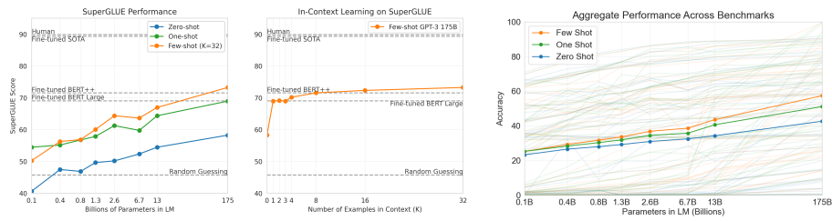
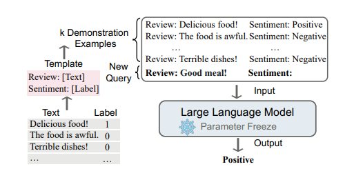
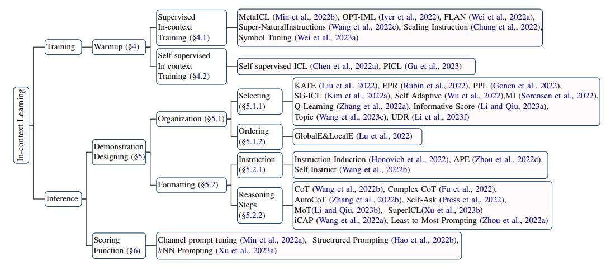

上下文学习
in-context learning(上下文学习)由发表在NIPS上的《Language Models are Few-Shot Learners》提出。这篇文章证明了增加语言模型的规模可以显著提升任务无关、few-shot的性能，甚至能和采用fine-tuning的SOTA方法媲美。作者训练了GPT-3，一个175B参数的自回归模型，并在few-shot下测试它的性能。在所有的任务中，GPT-3都能在没有任何梯度更新和fine-tuning，只是与模型进行纯文本交互(包括任务描述和少样本演示)的情况下在多个任务中获得了优异的表现，包括机器翻译，问答，填空问题。
尽管如此，作者依旧提到，GPT-3在少样本学习中仍然存在挑战，以及GPT-3在训练大型网络语料库时面临方法上的问题。并且，ICL对prompt，上下文示例非常敏感。
在此给ICL下一个定义。ICL是一种只用一些格式化的示例让LLMs学习所给任务的范式，本质上是根据给定的查询从候选答案集中选出可能性最高的。
总结
NLP已经从为一个任务训练特定模型走到了为许多任务设计一种通用的模型这一步。如BERT等语言模型在大规模语料库上进行预训练已经让模型具有了一定的通用性，但大多数情况下我们仍然需要根据下游任务进行fine-tuing。通常，fine-tuning包括冻结预训练模型的一部分层（通常是底层），以保留先前学到的通用表示，然后在任务特定的数据上进行反向传播，更新与任务相关的层的权重。
之后，一些工作(如Language models are unsupervised multitask learners)说明了也许微调不是必要的，模型可以通过一些zero-shot转变为通用的NLP任务处理模型。然而，这些工作虽然很有前瞻性，但他们的最好性能在很多任务仅仅比Baseline好一些，甚至比baseline更差。于是作者大胆猜想，很可能是由于模型规模还不够大，所以zero-shot的结果不太好。

在上图中能得到许多信息。
对于第一张图，我们能够看到在GLUE任务中，zero-shot，one-shot和few-shot的性能随着LM参数量的增加显著提升，175B参数的GPT-3性能超过了使用125K个例子微调的BERT-Large和630K个例子微调的BERT++。
对于第二张图，随着使用的上下文增加，GPT-3在BLUE任务的表现也更强，而微调过的BERT-Large和BERT++，它们两者的差距可以在GPT-3中相当于7个上下文的差距。
对于第三张图，在42个benchmark中使用不同数量的shot，综合表现也随着参数量的增加而提高。
综合这三张图可以发现，哪怕是one-shot的性能也是要比zero-shot高出不少的，所以作者认为，LLM实际上可以是一个学习器，fine-tuning与上下文学习是可以结合起来使用的。在作者的实验中，巨大参数量的模型在经过fewshot后能媲美甚至超过许多任务的SOTA。
为了证明想法，作者训练了一系列的模型，参数量从125M到13B，发现参数量与zero-,one-,few-shot对各类任务的影响是很平滑的。同时随着参数量的上涨，zero-,one-,few-shot对各类任务的性能差距也在增大(第三张图)。
方法
进行实验时，作者使用的方法有，
Fine-tuning，针对特定任务使用数千个数据在PLM上进行微调并更新权重。这种方法的优点是经过微调，都能在benchmark上取得不错的成绩。但缺点是为了适配每个任务需要大量的数据，在任务数据域外的泛化能力不佳。同时有可能因为数据中的一些spurious feature导致泛化能力差。
few-shot，给模型一些任务相关的描述作为条件，但不更新权重。一个示例通常由一个上下文和一个期望的结果，一般给模型10到100个例子。优点是极大减少了所需的数据，缺点是可能远远不及SOTA。
One-shot，类似于few-shot，只给模型一个例子。
zero-shot，不给模型例子，只给一个对任务的描述。
具体的in-context形式如下图所示，上下文最终和原查询生成一个新的查询输入给LLM。

ICL的优势是非常明显的，以自然语言编写，用户容易理解。其次无需训练模型，不修改权重。
后续工作
ICL在2020年提出，如今已经是2023年，这期间出现了许多相关的研究工作。
实验发现，ICL的强大性能取决于两个阶段：（1）培养LLMs的ICL能力的训练阶段，以及（2）在推理阶段，LLMs根据任务特定的演示进行预测。在训练阶段，LLMs直接在语言建模目标上进行训练，例如从左到右的生成。尽管这些模型没有专门针对上下文学习进行优化，它们仍然表现出ICL的能力。
下面这张来自于北大的ICL综述，详细阐述了针对ICL，训练与推理阶段为了增强ICL能力能做的工作。

warmup
预热是ICL的一个可选步骤，它在ICL推理之前调整LLMs，包括修改LLMs的参数或添加额外的参数。与微调不同，预热并不旨在为特定任务训练LLM，而是增强模型的整体ICL能力。
在预训练中进行适应性训练可以显著的提升ICL的能力。On the Relation between Sensitivity and Accuracy in In-Context Learning与MetaICL: Learning to Learn In Context中说明了adaption对ICL的增强。